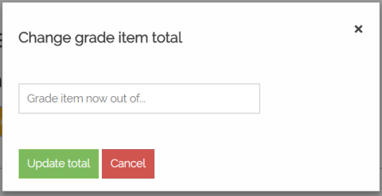

Version 1.0
Last updated: October 23, 2017
ezMarker is a web application that allows instructors at Wilfrid Laurier University to bulk upload grades and feedback into MyLearningSpace, with the integration of the Brightspace API supported by D2L. The goal of ezMarker is to solve the issues regarding inefficient manual grade uploading through the current MyLearningSpace interface. On average, it can take markers a few hours to manually upload grades for one class. Marking time is cut down to minutes with the use of ezMarker's bulk file uploading.
This documement describes the packages, front-end, back-end, and project structure of ezMarker.
There are PHP and Python versions of ezMarker. Both versions use corresponding versions of the Brightspace API Wrapper. The differences between the PHP and Python versions of ezMarker are described in the following two sections.
PHP (Hypertext Preprocessor) is a server-side scripting langauge, meaning it is executed by the server. It is used for ezMarker's PHP version. For this project, an AWS (Amazon Web Services) Ubuntu server hosts the PHP website. Ubuntu supports Apache, an open-source HTTP Server that can serve websites with a PHP backend.
Python is the scripting language being used for ezMarker's Python version. Flask, a Python microframework with a built-in development server and debugger, is used to make this web application. To host the Python project, Herokuapp is used because of its support for Flask Apps.

Brightspace takes care of generating the page and handling input.
This page has the list of courses and grade items the user has access to modify.

| Field | Type | Description |
|---|---|---|
| Course | Accordion | After clicking the course, it shows the available grade items to be modified by the user |
| Grade Item | Hyperlink | Redirects user to upload grade page for the grade item |

| Field | Type | Description |
|---|---|---|
| Change Grade Item Total Button | Button | Opens pop up window (see next subsection) |
| Choose File Button | Button | File dialog opens, allowing user to choose a Grade File |
| Delete Button (X) | Button | Deletes the student entry it refers to |
| Upload Grade File Button | Button | Updates marks and feedback for students using a Grade File |
| Upload Grades Button | Button | Updates students' grades for the Grade Item. List of students and grades is created. Prompts user to update grade item total when grade value > grade item total. Prompts user to cancel operation and set a different value if grade input field is empty or contains non-numerical input |
| Select-all Check Box | Check Box | Populates the page with manual input sections for every student in that course |
| Search Input Field | Input Field | Dynamic search that changes its dropdown list of candidates everytime user types. Searches by student name when user enters a letter first, otherwise searches by student ID. User can only add a student who exists in the database |
| Grade Field | Input Field | Allows user to manually input a student's grade, checks if user enters a value that is less than or equal to maximum grade value |
| Comment Field | Input Field | Allows user to manually input a student's feedback |
Pops up when Change Grade Item Total Button (From previous subsection) is clicked.
| Field | Type | Description |
|---|---|---|
| Close Button | Button | Closes pop-up window |
| Update Total Button | Button | Changes the total maximum mark of that grade item |
| Update Mark Text Field | Text Field | Allows user to enter a numeric value |
Reports which students' grades were not set successfully.

| Field | Type | Description |
|---|---|---|
| Check Grades Button | Button | Links to Brightspace page with all of students' grades for the current grade item |
| Logout Button | Button | Go to Logout Page |
| Upload More Grades | Button | Returns user to Course List Page |
Brightspace generates logout page and handles logout.

This section describes the back-end controllers and functions.
Authors: Sarah Johnston, Xiang Ke, Weibin Ma, Troy Nechanicky, Michelle Wong, Hind Althabi
SQA: Zac Macdonald, Pirajeev Prabaharan